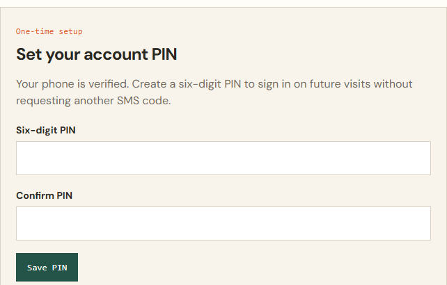
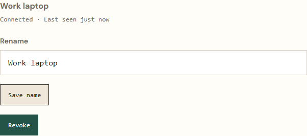

CampfireSMS
CampfireSMSBefore running the command
For a local agent connection, use Windows, macOS, or Linux with Node.js 18+ (including npx), Python 3.12+, and an MCP-compatible coding agent. Keep the computer awake and online while the agent works. The local connector does not wake stopped sessions.
Setup time depends on downloads, installed runtimes, and SMS delivery. Complete the two-way test before leaving your desk.
Verify your phone
CampfireSMS sends a verification code and creates your free 40-message demo. No credit card is required. Choose and confirm a six-digit PIN for your account; later visits use your phone number and PIN.
Run the command CampfireSMS gives you
npx -y @campfiresms/setup XXXX-XXXX
The command is temporary, single use, and expires after 10 minutes.
Connect your agent
The installer stores your installation credential locally and automatically registers detected Codex and Grok Build CLIs. For other MCP-compatible agents, add a local MCP server named
campfireusing the server command printed by setup. Open or restart your agent, then ask: “Use CampfireSMS to keep me updated on this task.”Test both directions
Send the test message, then reply TEST. CampfireSMS confirms when setup is complete.
You can rename or revoke a computer from your CampfireSMS account. Revoking one installation does not expose or alter another.
What you will see
These screenshots show the actual account interface with fictional sample data. Your message balance and computer label will differ.


What the installer does
It installs the client-only CampfireSMS MCP connector, automatically registers supported CLIs it finds, validates the connection, and reports a clear result. It does not clone a repository or run another AI model.
Use your first connected session
Follow the SMS notifications walkthrough, or prepare a task with the away-from-desk guide.
Update or recover a connection
If an installation command has expired or was already used, sign in and create a new command for that computer. If your existing credential is valid, refresh the connector with:
npx -y @campfiresms/setup update
If your credential was revoked, expired, or is missing, create a new installation command instead. Restart your agent after updating, ask it to open a bridge, and test both directions. Check your included messages and purchased credit balance if messages still do not arrive.
Revoke one computer
- Sign in using your verified phone and PIN.
- Under Add computers, find the installation by its label. Use Rename and Save name to make computers easy to recognize.
- Select Revoke for that installation. Its credential can no longer access the bridge; your other installations keep their own credentials.
The permanent credential is stored locally by the installer, not shown for copying in the account page. Phone verification proves control of a number, not permanent personal identity.
Remove the local connector
After revoking the installation, remove each local MCP entry you use:
codex mcp remove campfire grok mcp remove campfire